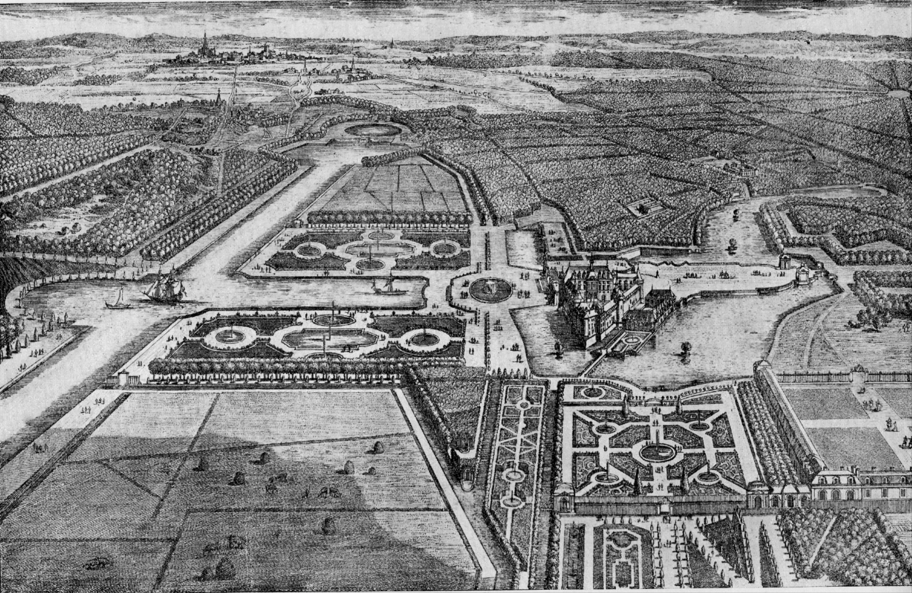

Introduction
Le jardin régulier ou jardin classique est un jardin avec des garnitures et des agréments, expression du classicisme dans l'art des jardins, autrement dit la recherche de la perfection formelle, d'une majesté théâtrale et d'un gout du spectacle. Son vocabulaire esthétique, végétal et sa statuaire sont directement inspirés des jardins du nord de l'Italie. Mais, dotés en général d'une superficie plus grande, ils font entrer le paysage dans le jardin tout en conservant le souci de la perfection formelle : terrassés, réguliers, souvent linéaires, faisant une large place aux jeux d'eau, ils comportent des aménagements lourds (hydraulique des canaux et bassins, orangeraie, pavillons) et font montre d'une taille savante des végétaux (l'art topiaire). Le jardin classique culmine au XVIIe siècle avec la création pour Louis XIV des jardins de Versailles qui deviennent une référence pour les cours d'Europe. Le classicisme s'exprime également dans l'horticulture, Jean-Baptiste de La Quintinie initie un art de la taille fruitière et des techniques de culture sur couche qui marqueront durablement les jardins de production. Mais le terme jardin classique n'est retenu que pour les jardins d'agrément.

Les lois de composition
Le dessin des parterres et l'emploi des surfaces d'eau venant s'intégrer aux compartiments de verdure sont les premiers exemples de ce qui constitue l'esprit du jardin classique :
- le plan est géométrique et exploite pleinement les avancées de l'optique, de même les élévations végétales sont taillées, formant des murs et des topiaires.
- une terrasse surélevée le domine et provoque chez le visiteur l'envie de découvrir par degrés le jardin; plus les parterres sont proches de l'habitation, plus ils sont soignés.
- un axe perspectif passe par les appartements. Sur cet axe le jardin s'ordonne symétriquement : la théâtralité s'exprime par la surprise, le marcheur doit découvrir de nouvelles perspectives ou des endroits cachés, les terrasses sont étudiées selon des profils qui masquent des parterres nouveaux, etc. Les bosquets contiennent des salles discrètes.
- le spectaculaire culmine dans des jeux d'eau, les fontaines, jets, rideaux d'eau dont la complexité est à son apogée.
- le symbolisme des jardins renaissants est simplifié et limité à des références mythologiques : les allées sont rythmées par des statues à l'antique.
- le jardin ne change pas durant l'année.
Des jardiniers architectes
L'organisation du jardin à la française est fixée par l'important ouvrage d'Antoine Joseph Dezallier d'Argenville : La Théorie et la pratique du jardinage, où l'on traite à fond des beaux jardins appelés communément les jardins de propreté (1709 ; 1713 ; 1732) Jacques Boyceau, sieur de la bauderie (environ 1560–1633) est le premier à conceptualiser le style français dans son Traité du jardinage selon les raisons de la nature et de l'art publié en 1638; il définit et dessine parterres, pelouses, bosquets et autres ornements. Son influence est durable à travers les jardins du Palais du Luxembourg, des Tuileries et Saint-Germain-en-Laye. Claude Mollet jardinier d'Henri IV, Louis XIII et Louis XIV publie Théâtre des plans et jardinages, contenant des secrets et des inventions inconnues à tous ceux qui jusqu’à présent se sont mêlé d’écrire sur cette matière (1652), réalise au château d'Anet un jardin à l'italienne, et André Mollet son fils diffuse le style en Hollande et en Grande-Bretagne, initiant le jardin à la française que toute une école de jardinier reproduisent et améliorent dans toute l'Europe : en premier lieu André Le Nôtre et Pierre Desgotz, Claude Desgots, Jean-Charles Garnier d'Isle, René Carlier, Jean-Baptiste Robillon…)
Broderies dans les jardins du château de Villandry (Indre-et-Loire)
André Le Nôtre appartenait à l'Académie d'architecture : formés au dessin d'architecture, les concepteurs de jardins français du XVIIe siècle laissent transparaître la prédominance architecturale, toutefois le jardin classique correspond à une période d’accélération de l'horticulture que les classiques maitrisaient parfaitement. Le jardin français est l'écrin ou le décor de la demeure, à la différence des jardins antiques et arabo-andalous qui étaient des jardins habités en continuité avec la demeure. Le jardin est dessiné comme un édifice, en une succession de pièces que le visiteur parcourt, soumis à des surprises, des repos et des perspectives, des lumières et des ombres, des allusions et des illusions... Le vocabulaire architectural utilisé dans la description du jardin à la française traduit les intentions du dessinateur. On y parle de salles, de chambres ou de théâtres de verdure. On se déplace entre des murs de charmilles ou le long d'escaliers d'eau. On recouvre le sol de tapis de pelouse brodés de buis, les arbres sont taillés en rideau le long des allées. Les hydrauliciens utilisent toutes les ressources de la gravité, les terrasses permettent des circuits complexes, des escaliers d'eau. Les bassins qui jouent le rôle de miroirs prennent des proportions considérables. Dans le bosquet du Marais à Versailles, le paysagiste de Louis XIV, André Le Nôtre dispose des tables de marbre blanc et rouge pour servir des buffets. L'eau en s'échappant fabrique des carafes, des verres et des vases virtuels qui imitent le cristal. Les escaliers sont confortables, les volées réservent des repos d'où le marcheur découvre des points de vue. On a beaucoup trop simplifié l'opposition des jardins à l'anglaise qui sont des jardins de peintres et des jardins classiques qui sont des jardins de metteurs en scène, en réduisant le jardin à la française à un jardin de lignes droites opposé à un jardin à l'anglaise ou rien n'est orthogonal. Ils appartiennent tous à une génération de jardins décor, les seconds expriment une sensibilité préromantique alors que les premiers sont encore marqués par l'ordonnance et le goût du jeu de la renaissance.

La perspective corrigée
Le jardin à la française ne peut se réduire à l'application rigoureuse des tracés géométriques et des lois de la perspective. Dès la publication des premiers traités, au début du XVIIe siècle, des chapitres complets sont consacrés à la perspective corrigée. À la différence de la perspective optique, essentiellement théorique, la perspective corrigée anticipe les déformations liées aux effets de fuite. Lors du renouveau du jardin à la française de la fin du XIXe siècle, Henri Duchêne et Achille Duchêne parleront d'art de la dissimulation. Les solutions traditionnelles - déformation de cercles, perspectives accélérées - sont utilisées méthodiquement : élargissement progressif des allées et des compartiments pour raccourcir l'échelle du jardin (Vaux-le-Vicomte), écartement des alignements d'arbres par rapport à l'axe théorique (Tanlay). La liberté prise par les dessinateurs de jardins à la française avec les règles de la perspective leur permet d'éviter la rigidité de la géométrie. Avec la demande croissante tout au long du XVIIe siècle de jardins de plus en plus ambitieux, on assistera alors à une inversion des valeurs. À Chantilly comme à Saint-Germain, le jardin n'est plus le prolongement du château mais le château est devenu l'un des accessoires du jardin, dont il occupe maintenant un compartiment.
Devenir du jardin à la française
Le jardin à la française évolue dans la seconde moitié du XVIIIe siècle en jardin rococo où les espaces ouverts disparaissent et où se multiplient les folies de jardin et les décors champêtres. Le goût des chinoiseries, de l'exotisme, des pastorales bucoliques grandit sous le règne de Louis XV, le jardin chinois ignorant la symétrie devient à la mode, reproduit des paysages. Lentement les jardins intègrent un style préromantique sous Louis XVI. La fin du jardin à la française accompagne la fin du centralisme monarchique absolu qu'il exprimait ; dès avant la révolution les jardins anglo-chinois ont des temples de la fraternité. Au XIXe et XXe siècles a lieu un renouveau, les paysagistes Henri et Achille Duchêne diffusent à travers la planète le jardin classique théâtral. Leur manière est fignolée, distanciée, la répétition des grands parterres, des symétries et des surfaces d'eau ordonnées montre une maitrise remarquable du style qu'ils adaptent à des sites incroyablement divers. Lentement ils contribuent à l'évolution du style majestueux incorporant des espaces irréguliers à la veille de la Seconde Guerre mondiale qui sonne la fin des jardins fastueux. La renaissance du jardin à la française donne lieu à de magnifiques réalisations, comme le jardin du Schloss Linderhof par Carl von Effner, majestueux et concentré qui va au-delà du pastiche dans un cadre exceptionnel. Jean-Charles Alphand intègre, au parc Borély à Marseille, dans l'axe du château un jardin à la française du XIXe siècle et un parc à l'anglaise autour d'un lac avec cascade. Parmi les contemporains, une rare réalisation de jardin grandiose à la française est celle du décorateur Jacques Garcia au jardin du château du Champ-de-Bataille. Il déploie son jardin sur un axe ascendant, comme au Palais royal de la Granja de San Ildefonso ; le grand miroir d'eau - la lumière - se découvre comme ultime étape d'une ascension qui comporte un véritable parcours. Comme les classiques, Jacques Garcia donne une dimension symbolique modernisée à son jardin avec des références maçonniques et allégoriques. Le vocabulaire végétal y est riche, parfois exotique, mais ne s'impose pas de façon démonstrative. Cette création démontre combien la majesté des proportions, la théâtralité, dominent le visiteur, y compris quand le sens du détail est soigné. Le jardin classique théâtral et majestueux est un style de jardin impressionnant qui suscite toujours une forte attraction touristique et un sentiment d'harmonie, on s'y sent à l'exact opposé de l'intimisme du Généralife qui fut pourtant à l'origine de l'admiration des princes de la renaissance italienne pour l'art des jardins.